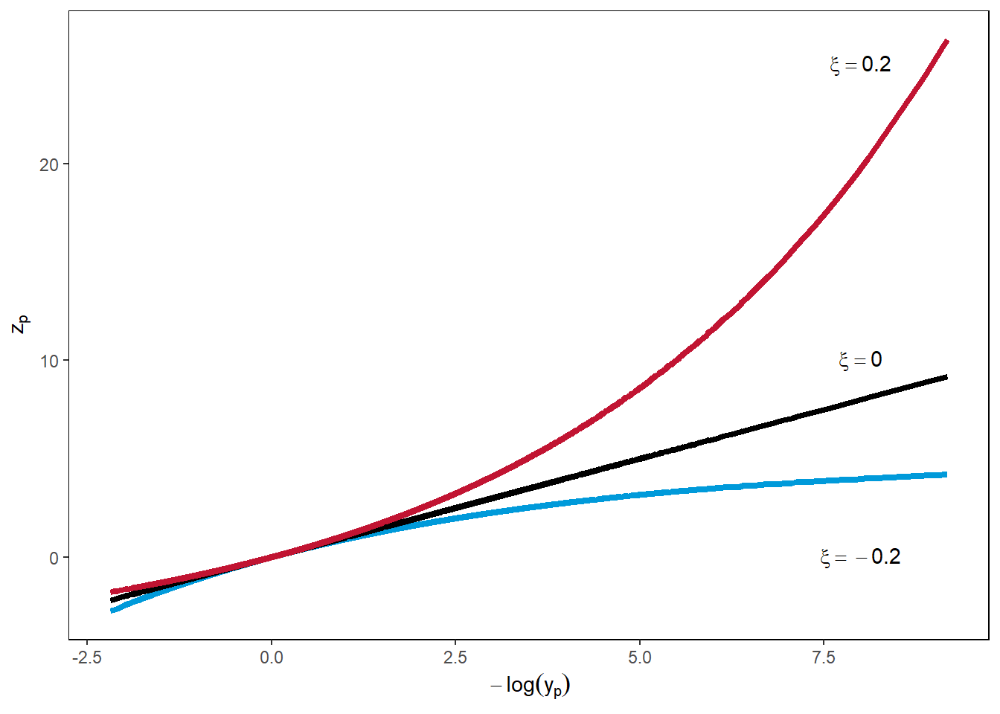
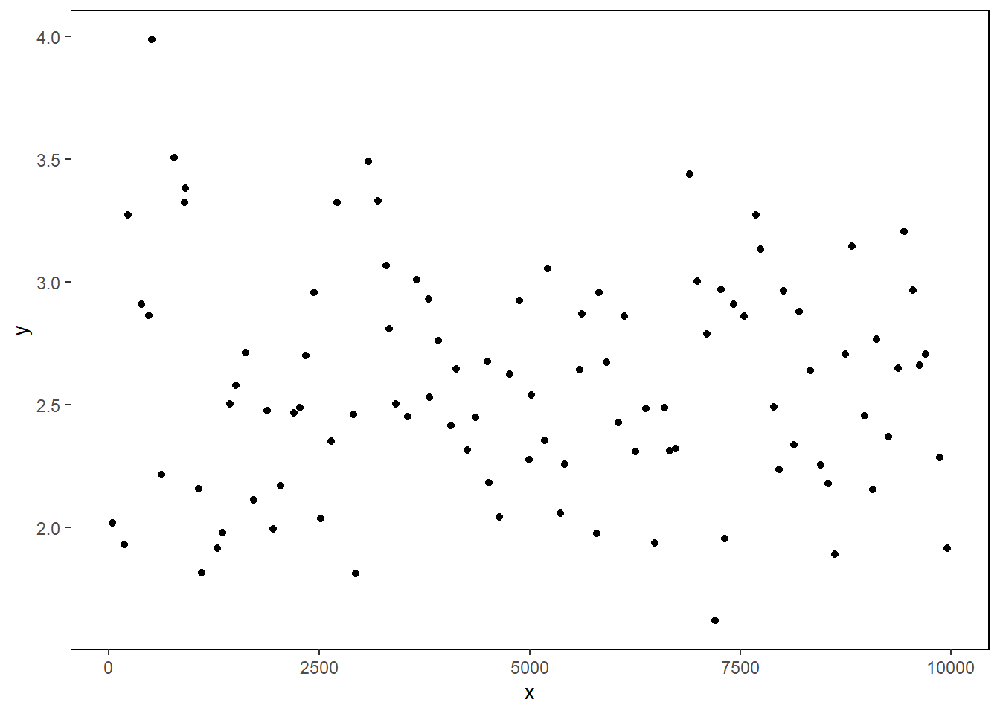
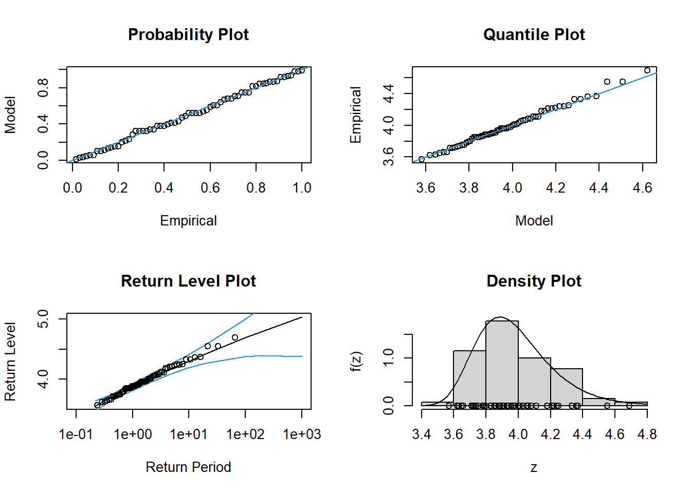
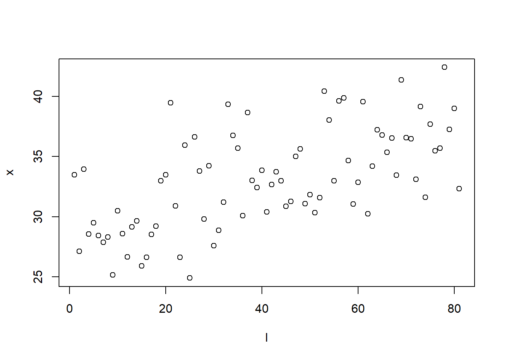

Explore extremes
Block maxima
Suppose we generate from normal distribution. And we have block maxima from every \(100\) observations.
df <- data.frame(x=1:10000, y=rnorm(10000,0,1))
df$block_max <- rep(FALSE,10000)
for (i in 1:100) {
df$block_max[df$y==(max(df$y[(100*(i-1)+1):(100*i)]))] <- TRUE
}
ggplot(df) + geom_point(aes(x=x,y=y,colour=factor(block_max)))
Suppose we plot only the block maxima.
ggplot(df %>% filter(block_max==TRUE)) + geom_point(aes(x=x,y=y))
Model with GEV.
ggplot(df %>% filter(block_max==TRUE),aes(y)) + geom_density()
ggplot(df,aes(y) ) + geom_density()
Return level plots
Exercise recreating Fig. 3.1 from Coles’ book. Possible typo in the book as the \(x\)-axis should be \(- \log(-\log(U))\) and not \(\log(-\log(U))\).
# set parameters
mu <- rep(0,3)
sigma <- rep(1,3)
xi <- c(-0.2,0,0.2)
U <- runif(10000) %>% sort()
z_p_neg <- c()
z_p_pos <- c()
z_p_0 <- c()
# calculate z_p for different values of xi
for (i in 1:length(U)) {
z_p_neg[i] <- -(1- (-log(U[i]))^(-xi[1]) )*(sigma[1]/xi[1])+ mu[1]
z_p_pos[i] <- -(1- (-log(U[i]))^(-xi[3]) )*(sigma[3]/xi[3])+ mu[3]
z_p_0[i] <- -log(-log(U[i]))*sigma[2]+mu[2]
}
z_p <- data.frame(U,z_p_neg,z_p_0,z_p_pos)
z_p %>% ggplot() + geom_line(aes(x=-log(-log(U)),y=(z_p_neg)),color="#009ada",size=1.5) + geom_line(aes(x=-log(-log(U)),y=(z_p_0)),size=1.5) + geom_line(aes(x=-log(-log(U)),y=(z_p_pos)),color="#c11432",size=1.5) +
xlab(TeX("$-\\log(-\\log(U))$")) +
ylab(TeX("$z_p$" )) + theme_minimal() +
annotate("text", x = 8, y = 0, label = TeX("$\\xi=-.2$")) +
annotate("text", x = 8, y = 10, label = TeX("$\\xi=0$")) +
annotate("text", x = 8, y = 25, label = TeX("$\\xi=.2$"))Warning: Using `size` aesthetic for lines was deprecated in ggplot2 3.4.0.
ℹ Please use `linewidth` instead.Warning in is.na(x): is.na() applied to non-(list or vector) of type
'expression'
Warning in is.na(x): is.na() applied to non-(list or vector) of type
'expression'
Warning in is.na(x): is.na() applied to non-(list or vector) of type
'expression'
Maximum likelihood fitting of the GEV distribution
#install.packages("ismev")
library(ismev)Warning: package 'ismev' was built under R version 4.2.3Loading required package: mgcvLoading required package: nlme
Attaching package: 'nlme'The following object is masked from 'package:dplyr':
collapseThis is mgcv 1.8-40. For overview type 'help("mgcv-package")'.data(venice)Try some functions from the ismev package.
gev.fit(venice[,2])$conv
[1] 0
$nllh
[1] 222.7145
$mle
[1] 111.09925486 17.17548761 -0.07673265
$se
[1] 2.6280070 1.8033672 0.0735214Try random exponential as it is known to have $=
df <- data.frame(x=1:10000, y=rnorm(10000,0,1))
df$block_max <- rep(FALSE,10000)
for (i in 1:100) {
df$block_max[df$y==(max(df$y[(100*(i-1)+1):(100*i)]))] <- TRUE
}
ggplot(df) + geom_point(aes(x=x,y=y,colour=factor(block_max)))
fit <- gev.fit(df$y[df$block_max==TRUE])$conv
[1] 0
$nllh
[1] 61.12676
$mle
[1] 2.3471042 0.4059131 -0.1023331
$se
[1] 0.04464080 0.03081738 0.05748782fit$mle[1] 2.3471042 0.4059131 -0.1023331#gamGPDfit(x=df,datvar='y',threshold = 2.5,xiFrhs = xiFrhs)Compare the fit with the density.
g <- function(x) {
1/fit$mle[2] * (1 + fit$mle[3]*((x - fit$mle[1])/fit$mle[2] ) )^(-(1+1/fit$mle[3]))* exp(-(1 + fit$mle[3]*((x - fit$mle[1])/fit$mle[2] ) )^(-1/fit$mle[3]) )
}
x_fit <- seq(1,4,0.01)
y_fit <- c()
for (i in 1:length(x_fit)) {
y_fit[i] <- g(x_fit[i])
}
#plot(x_fit,y_fit)
df_fit <- data.frame(x_fit,y_fit)ggplot() + geom_density(df %>% filter(block_max==TRUE),mapping=aes(y)) + geom_line(df_fit,mapping = aes(x_fit,y_fit),color='#c11432') + theme_minimal()
Try same fit with Venice data.
venice <- data.frame(x=1:length(venice[,2]),y=venice[,2])
fit <- gev.fit(df$y[df$block_max==TRUE])$conv
[1] 0
$nllh
[1] 61.12676
$mle
[1] 2.3471042 0.4059131 -0.1023331
$se
[1] 0.04464080 0.03081738 0.05748782fit$mle[1] 2.3471042 0.4059131 -0.1023331x_fit <- seq(70,200,1)
y_fit <- c()
g <- function(x) {
1/fit$mle[2] * (1 + fit$mle[3]*((x - fit$mle[1])/fit$mle[2] ) )^(-(1+1/fit$mle[3]))* exp(-(1 + fit$mle[3]*((x - fit$mle[1])/fit$mle[2] ) )^(-1/fit$mle[3]) )
}
for (i in 1:length(x_fit)) {
y_fit[i] <- g(x_fit[i])
}
df_fit <- data.frame(x_fit,y_fit)
ggplot() + geom_density(venice,mapping=aes(y)) + geom_line(df_fit,mapping = aes(x_fit,y_fit),color='#c11432') + theme_minimal()Warning: Removed 131 rows containing missing values (`geom_line()`).
N <- 1000
norm <- rnorm(N)
ex <- rexp(N)
plot(norm,ex)
hist(norm)
hist(ex)
u_1 <- pnorm(norm)
u_2 <- pexp(ex)
u_1 %>% head()[1] 0.009910534 0.514955756 0.451964083 0.555154163 0.803930940 0.158245728plot(u_1,u_2)
n_1 <- qnorm(u_1)
n_2 <- qnorm(u_2)
plot(n_1,n_2)
par_1 <- 1/(1-u_1)
par_2 <- 1/(1-u_2)
plot(par_1,par_2)
Plot Gumbel distribution using PIT
mu <- 1
sig <- 1
U <- runif(1000)
z <- mu - sig*log(-log(U))
df <- data.frame(z,U)
ggplot(df) + geom_point(aes(x=z,y=U))
Try Port Pirie sea-levels diagnostic plots
Port Pirie data not available in the package, maybe try with Venice sea-levels data?
data(portpirie)
venice[,2] [1] 103 78 121 116 115 147 119 114 89 102 99 91 97 106 105 136 126 132 104
[20] 117 151 116 107 112 97 95 119 124 118 145 122 114 118 107 110 194 138 144
[39] 138 123 122 120 114 96 125 124 120 132 166 134 138x=gev.fit(portpirie[,2])$conv
[1] 0
$nllh
[1] -4.339058
$mle
[1] 3.87474692 0.19804120 -0.05008773
$se
[1] 0.02793211 0.02024610 0.09825633gev.diag(x)Try to recreate the likelihood function.
x <- portpirie[,2]The function gets longer as initial values of the parameters are either pre-specified or calculated from the data. Therefore, gev_fit.R script contains the function.
gev.diag(gev_fit(x))Warning in log(sig): NaNs producedWarning in log(1 + xi * ((x - mu)/sig)): NaNs produced
Warning in log(1 + xi * ((x - mu)/sig)): NaNs produced
# the function could return very high values
# that cannot be minimum negative likelihood like 10^6
# would include in further developmentSuccess! The plotting function works with the likelihood function and produces desired output.